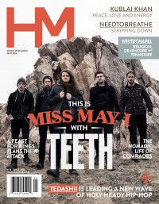

HM, May 2014, #178
| Cover |
|---|
|  |
 Online Exclusively Online Exclusively |
| Writers in this Issue |
| Eaves, Chelc Francis, Matt Gonzales, Jordan Houston, Robert Mabee, Justin Sabin, Nick Simula, Collin Stagg, David Van Pelt, Doug |
Miss May I
Cover Feature:- "Reinventing Miss May I" by Justin Mabee
- "Down in the Rivers to Pray" by Chelc Eaves
- "Rob Houston talks to Tedashii" by Robert Houston
- "An Evening With Whitechapel" by Collin Simula
- A Feast For Kings by Jordan Gonzales
- Miss May I - Rise of the Lion by David Stagg
- Liv. - Be The Change by Nick Sabin
- Comrades - Safekeeper by David Stagg
- Passion Band - Take It All by David Stagg
- I, The Current - The Seeking by David Stagg
- Ethan Luck - Hard Seas EP by Justin Mabee
- No Punk Influences - Fight Within by Robert Houston
- Lion of Judah - Lion of Judah
- KB - 100% by Robert Houston
- "How the world's premiere steel guitarist rekindled success and fulfillment in the Family" by Doug Van Pelt
- "We are All Comrades" by Chelc Eaves, David Stagg
- "Peace, Love and Energy" by Robert Houston
- "Sixty-four Minutes" by Matt Francis
- "All of my heroes are ex-Christians" by Collin SimulaChristian music as art
Relevant Links
Official web site of HMOnline back issue publication
This issue is available exclusively online.
You may be able to find HM in a library near you: Worldcat
© 2011 CMnexus. Last updated April 2021. Contact: editor -AT- cmnexus -DØT- org About